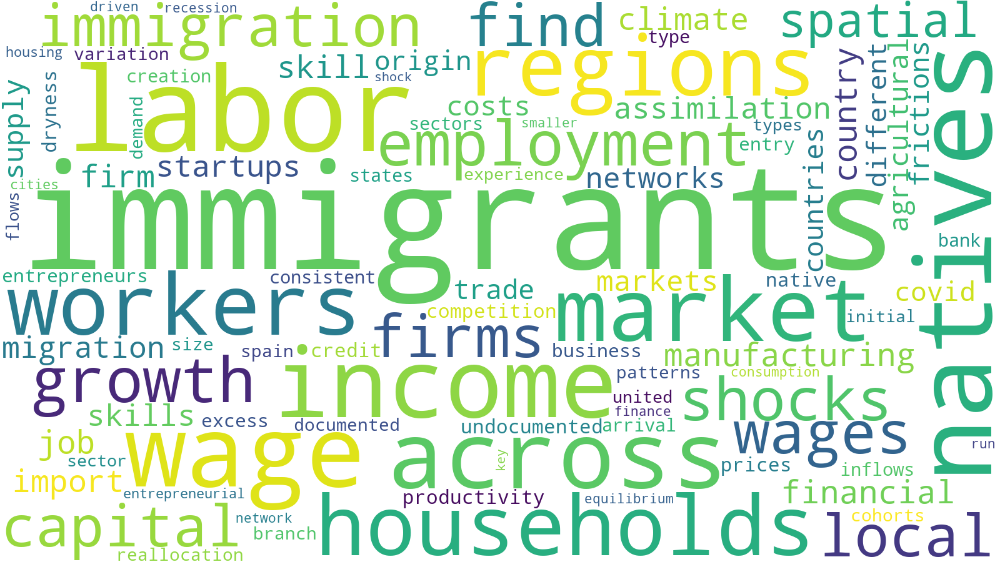

Upcoming presentations:
Lucca Macro Workshop, March 26-27
Bank of Spain, June 17
LISER Luxembourg, July 14
Lucca Macro Workshop, March 26-27
Bank of Spain, June 17
LISER Luxembourg, July 14
Welcome to my website!
I'm Associate Professor in Economics at the
University of Turin
and the
Collegio Carlo Alberto.
Other affiliations:
CEPR,
CReAM
and
IZA
Research interests:
Migration, labor, urban/international, climate economics
Education:
PhD in Economics, Universitat Pompeu Fabra 2018.
CV
Google Scholar
LinkedIn
Strava
christoph(dot)albert(at)carloalberto(dot)org
Keywords in my research:

© Christoph Albert